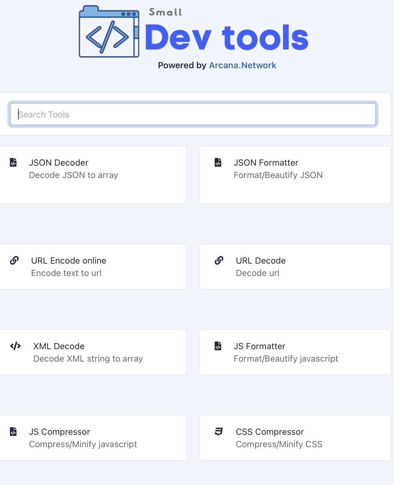
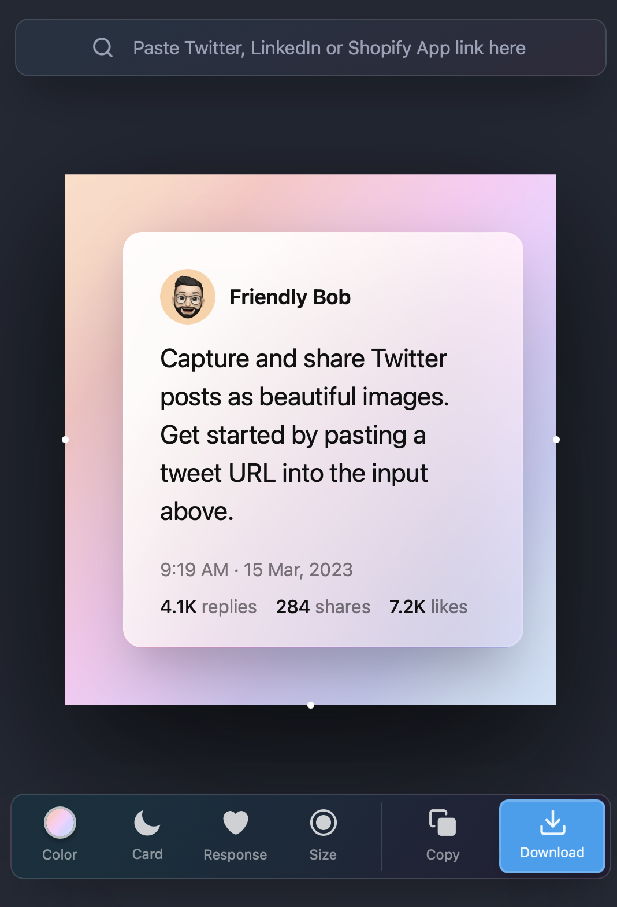
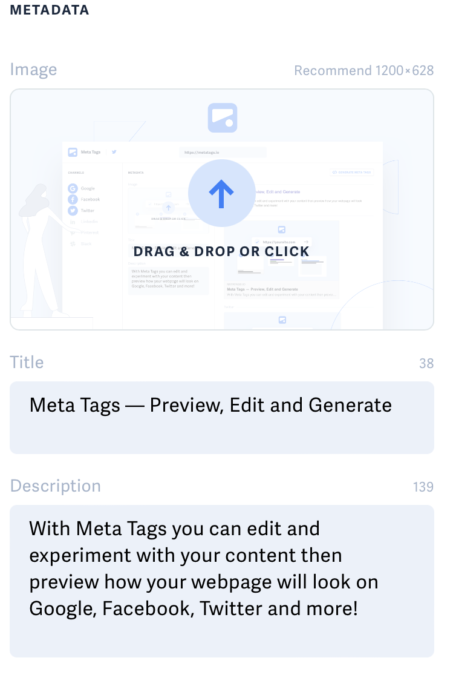

Hot Beans Web
Home
(current)
About us:
Contact us:
Meet the team:
Vacancies:
Useful links:
Small Dev Tools
https://smalldev.tools
Small Dev Tools is a collection of more than 25 tools for developers to help them with common tasks such as coding/decoding, file compression, testing, QR code generation and many more. Very easy to use with a nice minimalist interface and fast execution speed, it is a perfect tool for developers.

Poet.so
https://poet.so
This neat little tool allows you to capture tweets and transform them into eye-catching images - improving their style and impact when used on your website or in marketing campaigns.

Metatags
https://metatags.io
With Meta Tags you can edit and experiment with your content then preview how your webpage will look on Google, Facebook, Twitter and more!
